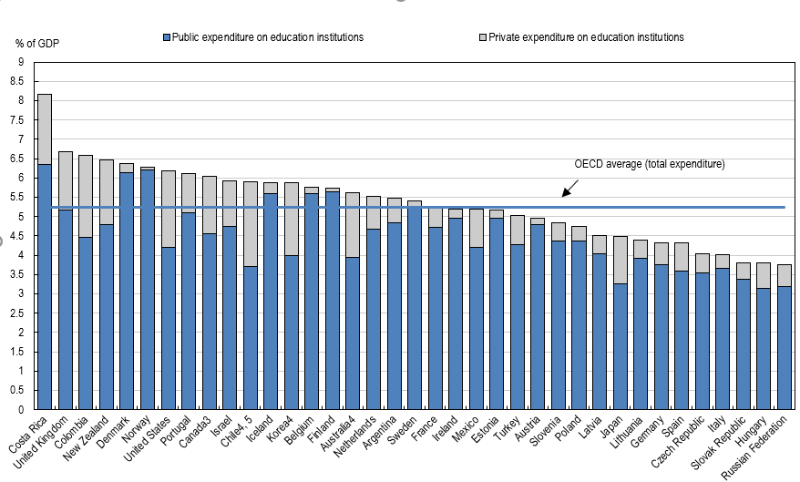

Governments around the world are widely perceived to be responsible for ensuring the provision of accessible quality education. This is a recent social achievement. According to Our World in Data the following visualization of public expenditure on education as a share of Gross Domestic Product (GDP) for a number of early-industrialized countries, shows that this expansion took place mainly through public funding.
When observing the expenditure for primary through tertiary education spending on 2013, most countries are spending more on public than on the private institutions. Of those countries in the OECD, countries such as Colombia, New Zealand, US, Chile, Korea, and Australia has higher percentage of spending on private institutions compared to other countries. 
As it can be seen, states and localities are – and have always been – the main sources of funding for public primary education in the US. In fact, we observe three broad periods in this graph: there is first a period of stable revenues until 1920, then a period of sharp growth and decline during the interwar years, and then a period of substantial growth since the second world war, slowing down in the 1970s. In all these periods, federal funding was always very small, as can be seen when changing the visualisation from ‘absolute’ to ‘relative’. This heavily decentralised system relying on property taxes has the potential of creating large inequalities in education, since public schools in affluent urban areas are able to raise more funding from local revenues. Indeed, a significant part of the debate on education inequalities in the US today focuses on the importance of increasing progressive federal spending to reduce inequalities in public school funding.
A comparison of expenditure between public and private education institutions is helpful to contextualize the role that the public sector played in the process of education expansion in industrialized countries. The following graph does this using data from the National Center for Education Statistics in the US. It shows that during the years 1950-1970 – a period of substantial growth in education expenditure in the US – expenditure grew specifically in the public sector.